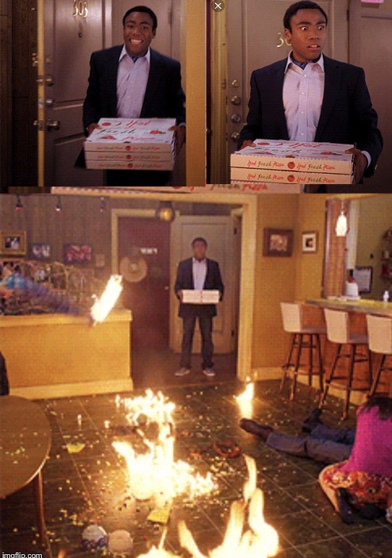
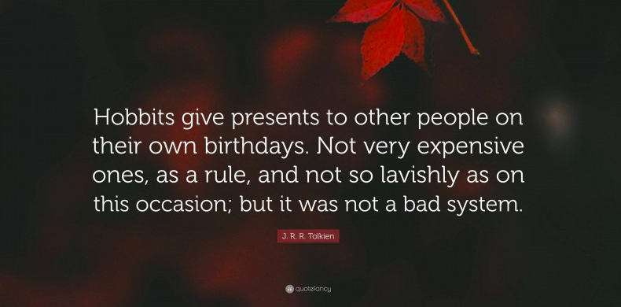
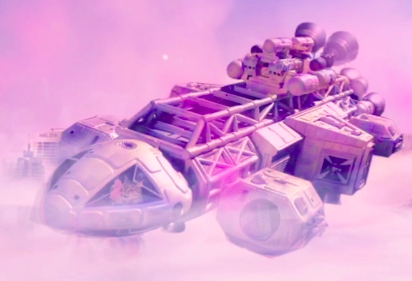

Thanksdrop 01, by windpowerstake
Background
Airdrops performed by validators might be a chance to engage their respective communities.Risk and challenges
Community engaging posts are happy events. Fair use.
All giveaway actions are a happy and broad event where part of the community might take part or opt in.
A reasonable and fair event, will ensure good participation at the same time as a win-win-win situation is generated.
The general idea of running cryptocurrency validation systems (regardless if secured by PoS, PoW pools or a mix) is that validators or pools don't run at losses and they dedicate to really invest their commissions in hardware, software, hours, transports and deliveries, and their general security infrastructure and hardening. Some validators even run as a company, which should take care of health and education of the workers which ultimately can lead to less downtime.
Because of the previous reasons, any giveaway might be perceived as unfair, maybe. In general we would say that everyone needs to use their common sense and try to perceive if an airdrop, promo, or giveaway action creates more community or value than it substracts (also looking at the short term).
A third consideration on airdrops and promotions is that they are advertised widely on determined social networks (e.g.: Twitter) and given a short spanning period of time, our users might not have enough time to react to the novelty and the need of reaction that each promotion might require.
See Polkachu's post: The Hitchhiker's Guide to Becoming a Top-Rank Validator
On airdropping
Art, made by artists
The art of airdropping and tipping cryptocurrency, there's a win-win situation when the holder of an asset shares part of their wealth with the community. The sense of ownership of a token or piece of art makes it much more valuable and it adds a background positive experience for both parts. We specially like the art, because (in the same way as modern picture expositions) artists might find out that their art is sparse around an entire community, making it even more worthy to release derivative works, developing trademark, developing community or calling for expos. Web3 really makes this topic much more traceable and accessible for creators around the globe. Ultimately everyone wins in this three party relationship, airdropper, community and creator. Life is about giving and receiving. For the ref.: Cada uno da lo que recibe.
By selecting special NFT's with artistic value, one the present we are giving is a piece of art. Value is subjective. We have been happy all the time we have been holding them. As any NFT, your property is the assignation of the work of art to your address, the capability to transfer the pointer, and a networking effect between yourself and the original artist that will, for sure, consider your object as part of his original expo. As any NFT, owners are using the images, avatars, background images in their social media accounts. Regarding copyright it's probably a good assumption to proceed using the piece of art in any desired way by using your common sense and invoking the United States copyright laws (Fair Use), especially when the user is the actual owner of the NFT (the NFT is hold on their address).
On airdropping in general
"The internet has needed this. You know, it's needed a form of, you know, sending value, if you will, that's more than an upvote, more than a retweet or a like, you know. It's actually giving somebody back something because of the time they put into something"
The rise and rise of the Dogecoin and internet tipping culture

Author Tolkien. Quotation. Fair use.
Complementing March's airdrop by Sunshine Validation
On March 2022, we participated in a promotion in order to encourage the spread of the voting to validators leading projects that offset their carbon footprint. Basis for this giveaway can be found in this tweet.
Method: 1 Lucky winner
This promo will focus on selecting randomly a lucky winner.
How to take part
Participating addressess don't need to take any action.
The selected candidate will need to confirm onchain that they are happy to receive the NFT (see next section).
Selected NFT is a cat, from the Cosmic Cat Collection at Omniflix. City of the Skies. Akashia... the city in the sky... powered by the clouds.

Author @Tangled_Cosmonaut. Fair use.
This NFT was sitting a the ground price of 5 ATOM and we bought it for the scope of this airdrop. The contents include a nice starship cruising over the city of Akashia, which seems to be powered by the energy gathered on clouds. A cat sits on the cockpit. The ship is powered by a battery of
Method in order to calculate if an address is participating is provided:Download python script
Selection method will be mechanical/probabilistical, we'll select a card from a maze containing only one address.
Participant list: huahua, juno, cerberus
On our best attempt to honour the mentioned March promotion, we included all chihuahua addresses which probably participated, and kept their delegation through time. This includes chihuahua delegations to sunshine, ECO stake and CARBONZERO.
Also in order to not leave behind our dear delegators from other chains, we made them also participants (in this case only windpowerstake) in order to give them a possibility of opting in.
Date of the snapshot: 17 Apr 2022 18∶10 CET.
Threshold: 1 JUNO
Threshold: 10000 HUAHUA
Threshold: 190000 CERBERUS
Participating list huahua-juno-cerberus txt
Participant list: nomic
Regarding nomic, we must give thanks to the Stake Frites team, which wrote a rust script that gave us access to our delegations in nomic.
Date of the snapshot: 21 Apr 2022 13:31 CET.
Threshold: 1 NOMIC
Participant list: evmos
Date of the snapshot: 16 May 2022 21:00 CET.
Threshold: 1.5 EVMOS
Once selected
One address will be selected, and this will be published in twitter, here, and we'll send different memos onchain on the networks they are staking with us or with any of the validator partners.
The proposal from windpowerstake will be to transfer the NFT to an omniflix address, probably owned by the selected person. The selected candidate will need to confirm onchain, or give us a hint via any of the communication channels that they are happy to receive the NFT at the proposed address. Once we receive this confirmation, we'll transfer the NFT. If no signals of life are given in the period of one month, we'll proceed to repeat the lottery in order to select a new candidate. The reason behind that is that NFT's are so unique that we cannot risk to send such a valuable piece of a collection to a dormant address that might never know that they received this thankdrop (and therefore the akashian cat is lost forever). This would break our heart, therefore the thanksdrop requires explicit opt-in via microtransaction with memo, for example "yes, I want to receive the NFT".
Why not only twitter campaign
Twitter only campaigns have the risk of letting out some of our most faithful delegators. For some reason or the other, people might not want to use twitter and/or other social platforms. If we believe in the chains we are validating, we will use them as a communication method as well. We recommend everyone, as usual, to get a juno domain at dens.sh. In the future, better features for interchain communication will be provided, and it is worthy to be on the loop from the beginning. We are building the future of Web3 together, so let's use those future tools.

Author: @windpowerstake. This work is licensed under a Creative Commons Attribution 4.0 International License..